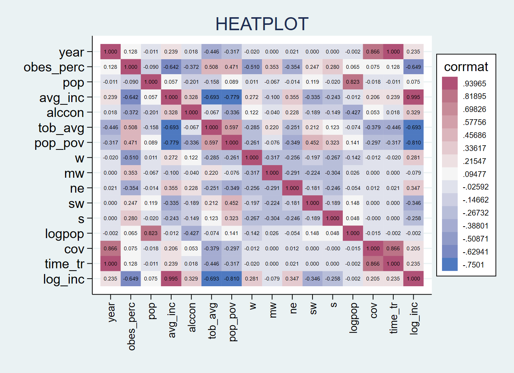

About Me
"Two roads diverged in a wood, and I, I took the one less traveled by,
and that had made all the difference." - Robert Frost
Results-driven data scientist and business analytics expert with a Master's degree in Business Analytics from The University of Texas at Dallas. Certified in Applied Machine Learning, Business Intelligence and Data Mining, I bring a wealth of technical skills to the table. My proficiency extends to designing and optimizing data warehouses for seamless data retrieval and storage.
Skills
- Python
- R
- Stata
- Java
- C
- Javascript
- SQL
- NoSQL
- PL/SQL
- SAS
- SAP
- ML
- DL
- NLP
- Tableau
- Excel
- Power Bi
- Visio
How did Covid - 19 affect
obesity in USA

“Did the COVID-19 pandemic have a discernible impact on the prevalence of obesity?”
Obesity is a major health risk and there have been many multi-million-dollar research papers on its causes and consequences. The objective of this project is to discern the significance of the COVID-19 as a factor in prediction of obesity and its relationship with the variables that are relevant in causing it.

We opted to set the thresholds at 35% and 58% for the conservative and aggressive strategies, respectively. Doing so allowed us to achieve a default rate of 4.8% and 9.9%, while still meeting the given constraints and maximizing revenue.
To design a conservative and aggressive strategy for the credit loan company so that they can decide whether to go with high-risk strategy or medium risk strategy based on the revenues generated and the risk involved.
DATABASE DESIGN USING ORACLEDB AND MONGODB
Creating two databases using Oracle DB and MongoDB for a chain of libraries. The databases are then used to generate reports that answer particular questions the librarian might have regarding lending or existing books.